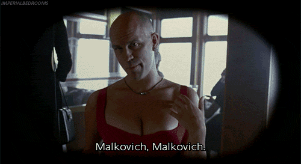

Um pouco de Malkovich
John Gavin Malkovich (Christopher, 9 de Dezembro de 1953) é um ator, produtor, empresário e diretor americano.

Malkovich
Malkovich,Malkovich,Malkovich,Malkovich,Malkovich,Malkovich,Malkovich,Malkovich,Malkovich,Malkovich,Malkovich,Malkovich,Malkovich,Malkovich,Malkovich,Malkovich,Malkovich,Malkovich,Malkovich,Malkovich,Malkovich,Malkovich,Malkovich,Malkovich,Malkovich,Malkovich,Malkovich,Malkovich,Malkovich,Malkovich,Malkovich,Malkovich,Malkovich,Malkovich,Malkovich,Malkovich, Malkovich.
Card title
This is a longer card with supporting text below as a natural lead-in to additional content.
Card title
This is a longer card with supporting text below as a natural lead-in to additional content. This content is a little bit longer.